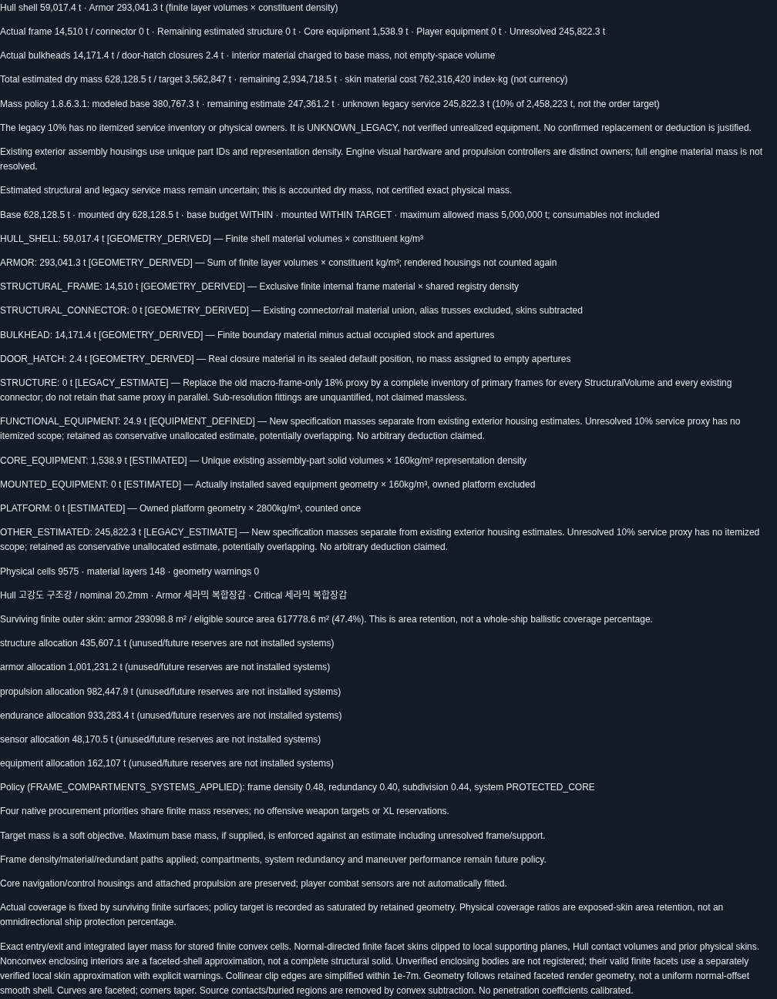
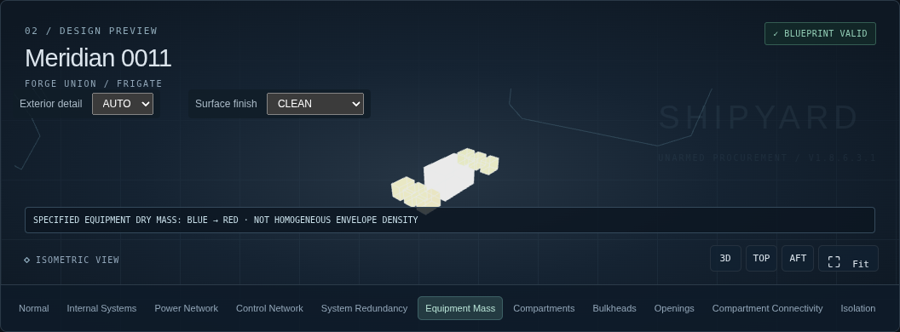
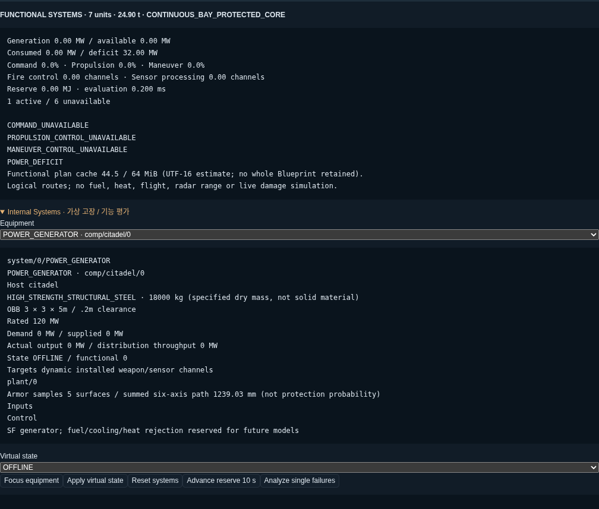
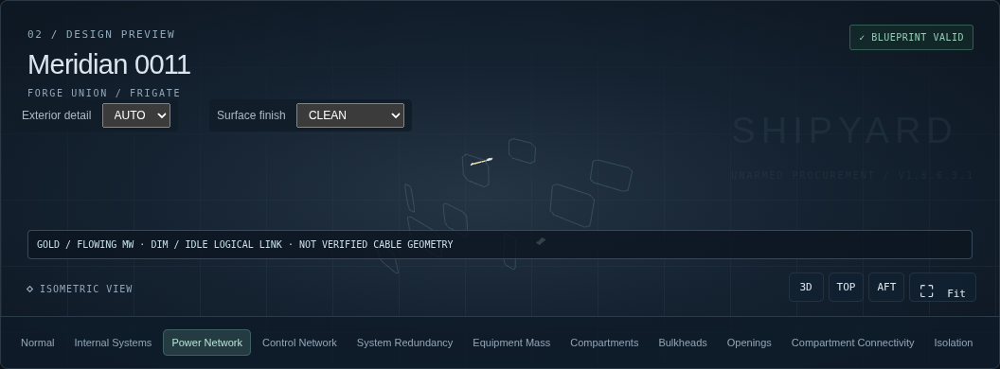
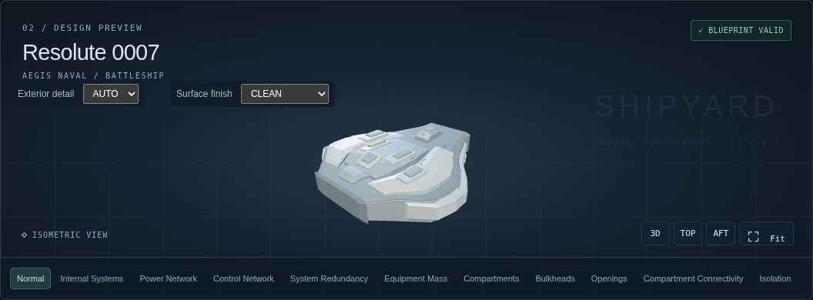
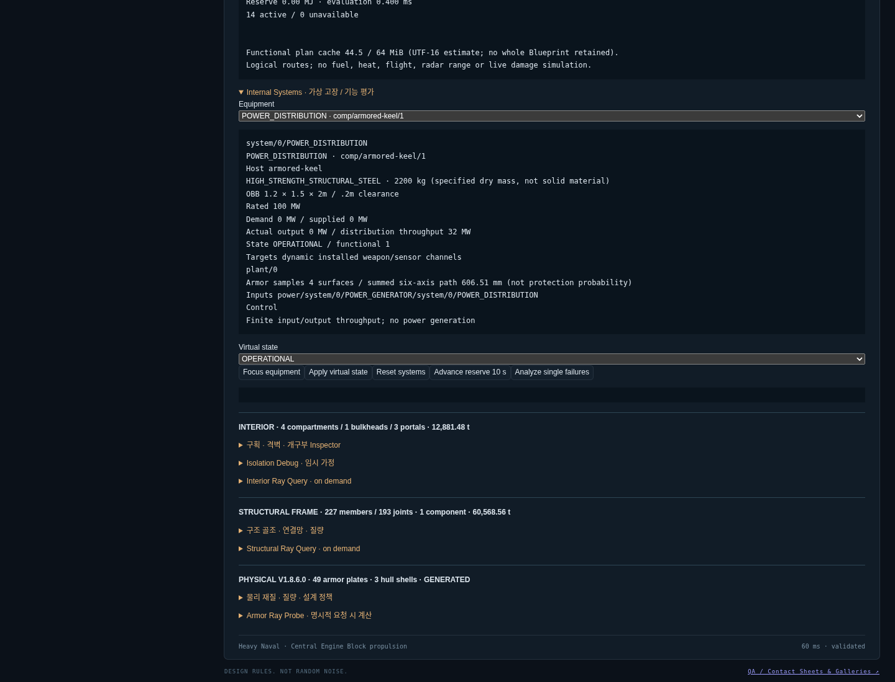
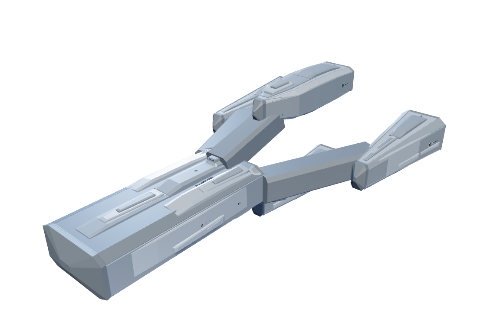
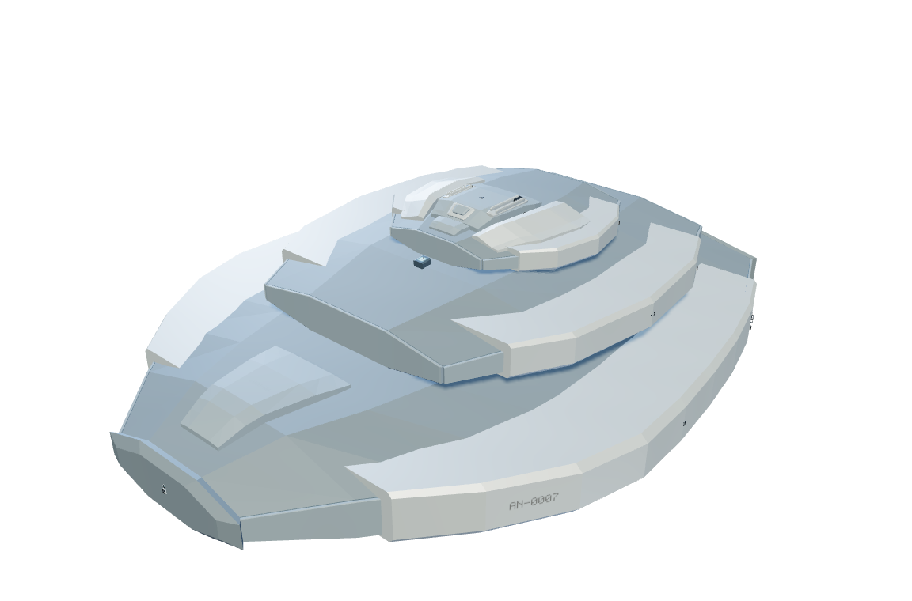

V1.8.6.3.1 — 실제 QA 캡처
실제 Chromium Production UI 및 실제 ShipViewer. 개념도·생성 이미지 없음.
상세 보고서질량 출처 Inspector
TWIN 실제 설비 확대
가상 발전기 정지
TWIN Power Network
Historical armed Blueprint
실제 Production 메모리 실험
BALANCED Normal BLOCK_ASSEMBLY Normal
BLOCK_ASSEMBLY Normal SPINE_AND_MODULES Normal
SPINE_AND_MODULES Normal TRUSS_POD Normal
TRUSS_POD Normal TWIN_HULL Normal
TWIN_HULL Normal CORE_AND_NACELLES Normal
CORE_AND_NACELLES Normal
STACKED_BLOCKS Normal
HYBRID Normal